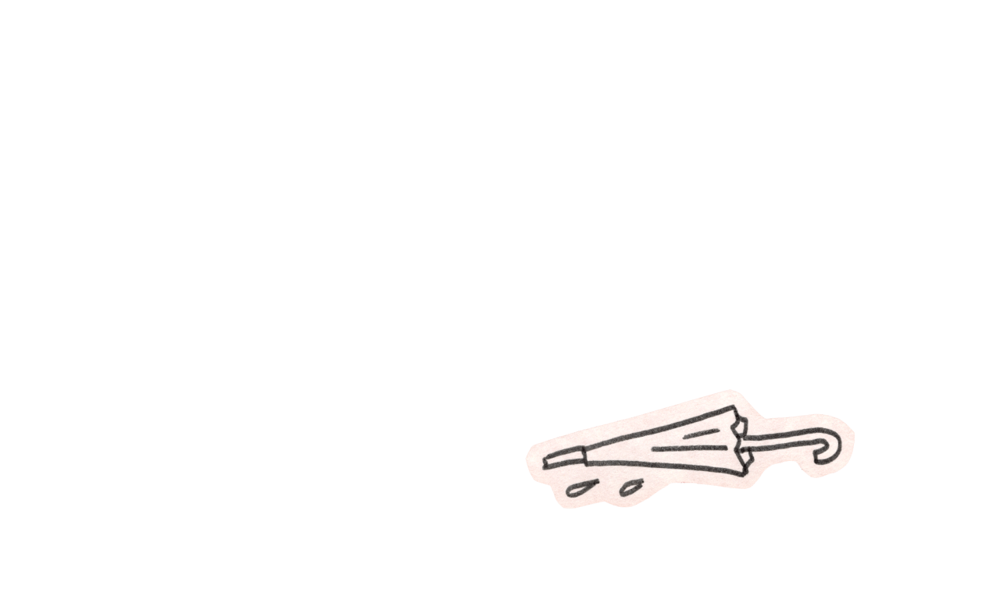

This is a digital zine about how you can physically document your personal experiences for the sake of future recollection.
If you've ever read childhood journal entries, you know the joy of getting a glimpse into the inner workings of your young mind. Reminiscing can bring up strange, surprising, and sometimes bittersweet feelings. You might realize how disconnected you are from that side of yourself now, or simply enjoy the reminder of how carefree you used to be. Saving these items helps repair the fragile connection between past and present.
In fifteen years, how well will you understand your present self? You may remember the names of friends, experiences that stand out in your mind, the general layout of your current dwelling. But will you know what was important to you? What you did on a day-to-day basis? What you struggled with? It’s easy to lose track of who you used to be, despite its fundamental connection to who you’ve become.
Consider what you currently have to look back on. Your phone’s camera roll, Spotify playlists, Pinterest boards, social media feeds... Does this paint an accurate picture of your life? With many of these being public, how will you understand who you were when you weren’t performing for other people? With the digital dark age upon us, these things could easily be lost to time.
Additionally, digital media fails to maintain all the sensory elements of physical media. Objects contain textures, smells, sometimes even tastes that bring back richer memories.
